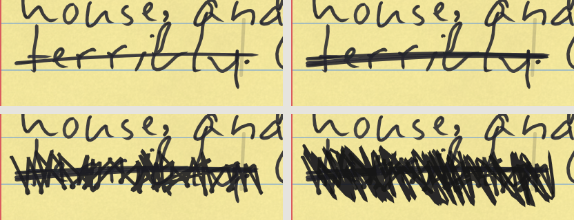

Draft translation: please check it with a native speaker before release.
Esta página es parte de la demostración de OCR. Estado: etapa 2, sin construir. La palabra terribly está tachada en cuatro etapas. Si el texto tachado se puede buscar es una cuestión abierta; el MVP lo guarda como texto normal.

Fuente: la página de escritura de if-this-finds-you (MIT). Crédito en esta página.